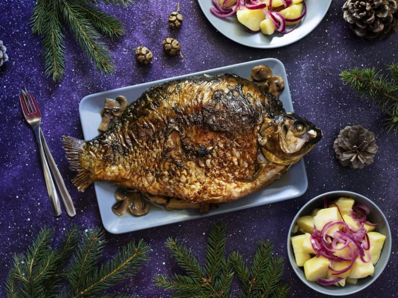

Kiedy? Jak?
Święta w Polsce rozpoczynają się 24 grudnia i trawają do 26 grudnia. Wigilię mamy 24 grudnia. Na tej stronie poznasz polskie tradycje polskie to jak obchodzimy święta i nasze korzenie religijne
Świeta! Świeta!
I po świętach...
Kiedy? Jak?
Święta w Polsce rozpoczynają się 24 grudnia i trawają do 26 grudnia. Wigilię mamy 24 grudnia. Na tej stronie poznasz polskie tradycje polskie to jak obchodzimy święta i nasze korzenie religijne
Polskie potrawy
W Polsce w święta jemy wiele ciekawych potraw poznaszje na tej stronie wraz z linkami do ich przepisów. Spokojnie wcale nie są takie ciężkie w przygotowaniu!
Postanowienia noworoczne
W polsce tradycją jest ustalanie sobie róznych postanowień noworocznych i próba zrealizowania ich lub dotrzymania w nowym roku.

Galeria
Na stronie znajdziesz galerie z najciekawszymi zdjęciami polskich domów w okresie świątecznym. Piękne świecące choinki i nie tylko. Sąsiad jest bardzo zadowolony